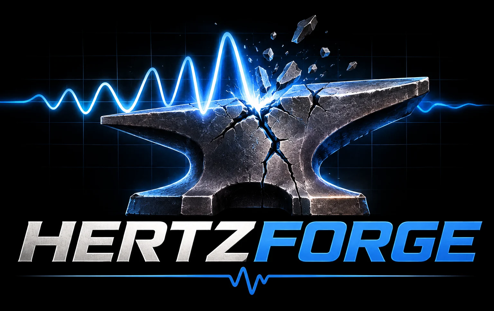

The whole structural dynamics workflow, in one toolset.
- Vibration & Shock Control
- Test Simulation
- Environmental Specification
- Data Acquisition
- Data Analysis
- Finite Element Modeling
Download
The desktop app for macOS, Windows and Linux. The Mac images are signed and notarized; the Windows and Linux installers are not signed yet. The latest release is on GitHub with its notes and checksums.
- Hertzforge for Apple silicon M1 and later. Open the disk image and drag Hertzforge to Applications.
- Hertzforge for Intel Macs macOS 11 or later.
- Hertzforge for Windows Windows 10 or 11, x64. SmartScreen warns about an unrecognized app the first time: More info, then Run anyway.
- Hertzforge for Linux (AppImage)
x64. Make it executable (
chmod +x) and run it. - Hertzforge for Debian and Ubuntu
x64, Ubuntu 22.04 or later. Install with
sudo apt install ./Hertzforge-Linux-x64.deb.
Example projects
Hertzforge project files (.hforge) to open with File › Open or drop on the window. Every number in them was computed by Hertzforge itself.
- Plate random run9.8 MB A random vibration controller run on a free plate: eight control channels against a specification with warning and abort limits, four force channels, and the PSDs, 1/6-octave PSDs and multiple coherence the controller computed.
- Plate modal run4.0 MB A modal survey of the same plate on a simulated plant: FRFs of eleven responses to two references, their multiple coherence and the time captures, with the survey geometry.
- Free plate model0.3 MB A free square plate of 144 shell elements and its 30 lowest normal modes, six of them rigid.
- Frame-Wing170 MB The round-robin frame and its two wings as five models of solid bricks: the frame, each wing alone, and the frame with each wing screwed across two uprights (65,585 nodes with the thick one), every model with its modes to 1500 Hz. The large case.
- BARC27.5 MB The Box Assembly with Removable Component, the structural dynamics community's shared test article, in solid bricks (15,429 nodes): the box, two channels and the beam, each bolt a rigid mated patch under its washer with the bolt's mass at its head. Twelve drive forces at the box's bottom corners with a flat force CPSD, the sixteen triaxial accelerometers the RC plate carries, its 59 modes to 10 kHz, and those modes at the drives and accelerometers: the environment the RC plate test replicates.
- RC plate76.8 MB The BARC's removable component bolted to a 10 × 1 × 10 in aluminum plate, in solid bricks (60,903 nodes), with twelve drive forces at the plate's corners, sixteen triaxial accelerometers on the component, its 38 modes to 10 kHz, and those modes at the 60 channels: a system to drive with a MIMO random controller.